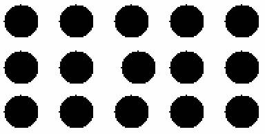

The AbSIRD Project:
To Create Real-Time SIRDs
By Lewey Geselowitz of the University of Florida
Under the supervision of Professor Jorg Peters of the University of Florida
NOTE: this is a work in progress
Contents:
Introduction
Purpose of Project
How SIRDs Work
Our SIRD Algorithm
The Software Implementation
����������� Notes on the Software Implementation
The Hardware Implementation
����������� Notes on the Hardware Implementation
Fundamental Limitations
Introduction:
����������� Popularized by NE Thing Enterprises� �Magic Eye: A New Way of Looking at the World� and many books and posters popularized the graphical system known as technically as Single Image Random Dot diagrams (here to referred to as SIRDs). These have now spread into billions of homes around the world, making the term �Magic Eye� common in most house holds. I have personally met very few people who don�t know the images, and most people find them quite wondrous and amazing. �Whether it be the idea of seeing something that isn�t there, the ability to see a 3 dimensional image from a 2 dimensional one, or simply the interest in a relatively new and untapped medium for art and design; whatever the reason may be, they are exciting and a great source of entertainment.
����������� However, the further development of these SIRDs has been seriously impeded by one important fact: up to this point, the methods used to create these images have been time consuming and laborious making real-time creation of these images a practical impossibility. For this reason, SIRDs have been limited to books and posters, which while interesting, cannot hold a feather to the wonder of animations (photography versus movies presents the same situation).
����������� This however need not be the case, our research at the University of Florida has uncovered an algorithm by which these images can be created in real-time. We has even progressed to the point of fully implementing the system for computer applications both in a generic system which uses a software based solution, and in a high powered version which takes advantage of modern programmable hardware.
Purpose of this Project:
����������� The purpose of this project is to develop and implement systems for rendering SIRD images in real-time. Our definition of real-time is somewhat abstract but we�ve quantified it to requiring that the sum of time taken to render a scene and apply the SIRD algorithm must take a time small enough to allow for frame rates at or above 30-40 frames per second, with a decent amount of environmental complexity.� The hardware which this requires depends on which of the multiple system implementations any particular application uses.� However I should mention that even our rough results so far demonstrate that the requirements to be well within what could possibly be considered reasonable bounds.
����������� The plan for the project was to develop the algorithm, and then to implement adaptations of it for specific cases. The two cases worked on so far where a 2 dimensional 8 bit integer based system, and an integrated 3d dimensional system using programmable graphics hardware (specifically vertex and fragment shaders).
How SIRDs Work:
����������� In explaining the algorithm which was created, I will first explain the principals of all SIRD images, and then explain how our adjusted method was created.
����������� First of all, SIRDs take advantage of a fundamental aspect of human vision; that we in fact don�t see in 3d, but that we instead in only see in 2d but then derive from the differences between the two 2d images seen by our two eyes a 3d representation in our minds of the world around us. This means of course that what we perceive as 3d need not be, and thus enters the possibility of creating specially designed images which mimic the differences between the images seen by our two eyes, thus using our own natural 3d image construction ability to create a 3d image in our mind. This is what SIRDs do. And while this may sound complex, it really isn�t.
����������� So here�s the problem: we want to fool the mind into making a 3d image, but we can only do this if the two eyes see something different. But when someone is looking at a poster or a computer monitor, both of their eyes are seeing pretty much exactly the same thing. Your mind can tell by matching up the colours and shapes it�s two eyes see and matching them in relation to the positions of your eyes, that the screen is flat, and how far away it is (at least approximately). Consider the diagram below:

����������� Now of course the mind sees the colour at the point where both lines from the eyes meet, it knows the angle between the forward direction of the eye and the meeting point, notes the difference between the two eye�s angles, how far apart they are, and thus can work out where the point is in space relative to the eyes.� The focus of the eye at this time is at the point on the surface of the screen. This, while of use to all other computer graphics applications, is useless for creating SIRDs.
����������� Consider however if the focus point of the person where not at the surface of the screen, but rather a little (or lot) behind it. Like in the diagram below (the reason for why this is important will be shown later):

����������� Now the focal point of the eyes is behind the screen (behind meaning on the opposite side of the viewer). But how can you do this, when the eye automatically focuses on the thing your looking at (the screen in this case)? The solution is fairly simple, note in the above diagram the points A and B, these are the points where the screen intersects with the line between the eyes as the focal point. This is where the trick of SIRDs begin! Now lets say that on the screen at point A and at point B you put the same image, lets say a black dot (on the otherwise white screen). If your eyes can focus on that point behind the screen, then your mind will think that the dot that the first eye sees at A and the dot that the second eye sees at B are the same dot! Your eye is fooled because it tries to quickly match up patterns from the two eyes, and mentally matching the points A and B was the easiest. You will of course actually see three dots now, because each eye is seeing two dots (A and B), and mentally combining two of them. The mind sort of ignores these others, so so will we.
����������� And now we finally get to the actual SIRD algorithm: consider a person who is looking at a similar screen to the one above and whose mind firmly believes his left eye�s A dot and this right eye�s B dot to be one and the same. Now lets say you have a whole bunch of such pairs of dots. Ignoring the affect due to change in relative location, the distance you�ll have to look �behind the screen� will be the same for all the pairs of dots on the screen as long as the distance between each pair is equal. So now you�ve got this huge mass of pairs of dots, each an equal distance from each other. Once your mind is convinced that one of the pairs is actually only one dot, then all the others will follow and your eye sort of �locks� onto this view. What would happen if lets say only one of the pairs of dots were slightly closer to each other than the rest? Consider the below diagram:

����������� Now most of the normal pairs are represented by A and B, and the distance between them is the distance between the majority of these random pairs of dots on the screen. The points Ac and Bc (c for closer) are a pair of points which are slightly closer to each other than the other pairs. Okay, so your mind firmly believes that its looking at a single dot at the focal point while in fact it�s left eye is seeing dot B and it�s right eye is seeing dot A. But now this one pair is closer than the others? Does your mind have to change it�s entire focus just to see this one pair? No, instead it again matches up the two points even though they have a different spacing, but to explain why these two points have a smaller distance between them, it simply assumes that the dot itself must be closer to the viewer. Note in the diagram above the point labeled as the �virtual point� this is the point which the mind logically concludes the dot is located based on the assumption that dot Bc and Ac are the same and uses the relative change in angle to calculate how far away it is. You can easily see how it could make this mistake by holding two pens in front of you and putting one behind the other, you will notice that you only know the one is closer to you by the fact that the angle to it from each eye is more extreme than the angle to the other pen.
����������� And thus you can see how by having your mind falsely match the images from its right eye to its left eye, you can create the illusion of 3 dimensionality.
Our SIRD Algorithm:
����������� The �traditional� SIRD algorithm, presumably used to create the images by NE Thing Enterprises and many of the available SIRD creation tools uses the model presented in the section �How SIRDs Work�. That is they take a height map (a height map is a 2 dimensional image where each pixel is interpreted not as a colour but as a height or offset from the screen), and create a software model with two eyes, matched correctly to the average distance between the human eyes, and then calculate given a specific focal distance behind the screen, and maximum displacement from that focal point, which two pixels match up when the eye focuses at a certain point behind the screen. They give a specific colour value to both of those pixels (the colour values were originally random, hence the term Single Image Random Dot diagrams, but can now be replaces with background images). So that when the viewer focuses on that point behind the screen, his eyes properly match up the correct pair of points as described in the previous section. This system however, while accurate, faces one major issue, it is very very slow. The reasons for this are many, including that it is not linear, bounding issues come up, that it�s based on the pixel being read not the pixel being drawn, and many other problems which prevent it�s practical use in real-time applications.
����������� In simple, what I found that was the above algorithm could be approximated using a fairly simple concept: that the change in perceived height is the result of a change in the frequency of the pattern which the eyes believes to be matching, and that as long as that change in the pattern persists along the rest of any particular line of a SIRD, and repeats itself as the base frequency, then only the point where the change occurred with appear at a different height. This is best seen rather than explained:

����������� Note that the above patter is regular except for two dots which are out of order. Because the distance between the two offset dots is equal to the distances between the other dots, the dot which you see when you mental combine them is at the base height. You must remember that every point which you see while your eyes are correctly focused to see the SIRD is actually your mental combination of two points. So the two points that are out of line, when combined (because they are at the correct distance from each other) appear to be at the base distance from you the viewer.� However, the two which are closer to each other, when combined, form a dot which appears to be closer to you the viewer. So to achieve the 3d affect, all you really have to do is bring two matching points closer to each other for one pair, and then make sure that you use that same offset for the rest of the repetitions of the pattern. Just out of interesting, note that happens when you don�t keep the change in the patter in further repititions but simply return to the normal pattern:

����������� You will notice that while the one combination dot is closer to you, the dot just preceding it is far behind the base height. So while that may be useful in some cases, the purpose of this project is to create a SIRD using an arbitrary height map, not just one with massive jumps in every repetition.
����������� So how does one implement this? The answer is in fact fairly simple. At this point I�m going to switch over and explain the implementation in software, and then later I�ll explain how it can be implemented using programmable graphics hardware. The reason for switching to the software explanation is it�s a lot easier to explain with code than to explain without it.
The Software Implementation:
����������� And now we get to the less theoretical part: we know that we can create the SIRD image by changing the frequency of a pattern at a particular point, and then using that �shifted� pattern when creating the next repetition. The original pattern of course changes as it goes, because those changes are kept, it doesn�t fundamentally matter how many changes you make, as long as you consistently carry then through.
����������� We will now consider the example which I used when first implementing this system, the situation is that you have an 8 bit texture (i.e. 2d dimensional array, which is actually stored as a single array of pixels), which holds at each pixel a height value from 0 to 31 (it�s maximum is of course 255, but I�ll explain why I use this number later). And you also have a random texture (i.e. a texture whole bits you�ve created randomly, each random pixel can have a value from 0 to 255). This random texture will act as the base pattern which will be repeated and in this way acts as the �dots� in the explanations above (i.e. it is a recognizable pattern which you can focus your eye�s behind and believe two repetitions to in fact be the same).� Consider the below code:
//Previously set:
int ScrW; //width of the screen
int RandW; //width of the random image (must be much smaller than ScrW)
unsigned char * RandData;
����������� //a particular row of pixels from the random image
����������� //implemented as the (y % RandImageHeight)th row
����������� // '%' is the mod operator
unsigned char * ScrData;
����������� //a perticular row of pixels from the screen
int x; //local variable
For each row of pixels, given the variables above:
for (x=ScrW-1; x!=ScrW-1-RandW; x--)
{
����������� ScrData[x] = RandData[ ( x - ScrData[ x ] ) % RandW ];
}
for (x=ScrW-1-RandW; x>=0; x--)
{
����������� ScrData[x] = ScrData[ x + RandW - ScrData[ x ] ];
}
����������� I should note that this code is taken directly from SGL ( http://plaza.ufl.edu/lewey/download/SIRD/SGL.html ), the SIRD Graphics Library, which I�m currently developing for use in a number of games (the variable names however have been changed to protect the innocent, I mean for clarity).
����������� First of all you should probably realise that as time progresses, the screen data is converted from a height map into a SIRD image, half way through the same image holds both the rest of the height map and the first part of the SIRD image. This is one of the key elements which allow the system to work.
����������� Now of course the above code is repeated for each horizontal row of the screen, but because they are all the same I won�t bother talking about them. Now let up consider the first of the two �for� loops: As you can see, it progress from ScrW-1 (which is the x coordinate of the last pixel of the screen) to just before ScrW-1-RandW, which is the beginning of the right most repetition of the random image. Now consider what would happen if the values of ScrData[x] in that loop where all 0, it would simply take the x value and then mod it by RandW, and then uses that value to get the colour from the random image and store it back into the screen pixel at that point. If however the value of ScrData[x] where say 5, then it wouldn�t just copy the corresponding pixel from the random image to the screen, it would instead copy the pixel 5 positions to the left in the random texture to the screen. In this way, the pixel that it pastes at x would break the frequency of the pattern. Imagine for a moment that this right most repetition where the last to be drawn, by moving a pair of matching pixels closer to each other (i.e. by moving the x element of the texture coordinate to the left) you create the illusion of a closer pixel which is the goal of the SIRD algorithm. But this first loop is a world unto itself, it is the first repetition and is thus not affected by other repetitions.
����������� The second loop however is where the real work is done; this is where the majority of the screen is rendered, i.e. the rest of the screen which wasn�t rendered in the first loop. This one starts at the pixel before the first pixel of the last repetition, and then loops back to the first pixel. As you can see, it copies a pixels from one point on the screen to another (hence the ScrData[x] = ScrData[�]). To calculate the pixel to copy from, lets first imagine that ScrData[x] is 0 (meaning the pixel to be rendered is at the base height) which leaves us with x+RandW which is just the x coordinate of the same point but in the repetition to the right of the current one. In this way, if the value of ScrData[x] is 0, then the frequency of the pattern is retained as the colour in the previous repetition at that point is copied. If however the value of ScrData[x] is greater than zero, then again the pixel copied is offset from the base frequency and creates the illusion of a change in height. And in this way the SIRDs are created within SGL.
����������� It should be noted that what you now have is a SIRD image with a range of random values, from 0 to 255, the simplest method to display this is to use a simple palette system as was used in the good old days before true colour. SGL uses SDL (the Simple DirectMedia Layer, a cross platform generic windowing and media abstraction API, from http://www.libsdl.org ) to handle input, the window, the palette etc. This allowed us to not only compile on any platform with an SDL implementation (almost all fairly known OSes have one), but it also makes excellent use of hardware accelerated 8 bit palettes.
����������� It should be noted that this system is (as I mentioned) being developed into a number of games, using the standard SIRD graphics library I�ve created, which can be found at http://plaza.ufl.edu/lewey/download/SIRD/SGL.html . There you can find links to games and demos being developed using SGL and other such information.
Notes on the Software Implementation:
����������� First of all, let me say that this implementation runs at fairly high speeds on most systems. While I still need to work out a good bench marking system, current results are well above our requirement of 30 fps on all the systems I�ve tested. Of course this depends highly on the processor as the algorithm runs entirely in software.
����������� And now I have to point out one of the major problems with this system. This error hadn�t even occurred to me, but with the development of �SIRD fire� a simple demonstration of the SIRD affect applied to a fireworks simulator (this is available from the SGL homepage) it became blatantly obviously. While you cannot really see the error in the screen shot of the demo, it is quite apparent if you run the program: You see these huge streaks of colour across the screen at certain points. These streaks interfere with your viewing because if the eye is sensitive to changes in distance as small as one pixel and if when the rendering is done two pixels are the same colour and next to each other, the mind has no way of knowing that a change has occurred at that point. The cause of this is explain below.
����������� Consider a height map that quickly goes from a high height to a low height going from left to right, lets say it goes down one height unit for each increase in the x coordinate by one (that is a delta height of -1). So as the x value increase the height value decreases at the same rate. In the equation [ x + RandW - ScrData[ x ] ] which is used to calculate the pixel to read from, a positive change in x and a negative change in height results in no change to the result of the function. For example 55 + RandW � 25, 56 + RandW � 24, etc, will have the same result. This means of course that the system keeps reading from the same source pixel, which means that all those points on the slope going down will have the same colour value. And thus you get these huge streaks of colour which disrupt the experience and severely lower SIRD quality.
����������� The streaks in SIRD fire are so bad that one might wonder what�s the point of using this system at all? The answer is simply that while there is of course this affect, if attention is paid to the shape and size of the models or sprites used then the errors caused can be minimalized and even hardly noticeable if done correctly. To prove this I point out SPong, a SIRD based Pong game made using SGL (which uses the exact algorithm shown above), which I wrote as a demonstration of the use of the SIRD system in real-time games. You can download or just see screenshots of SPong at http://plaza.ufl.edu/lewey/download/SIRD/SPong.html (currently only the Win32 version is available, but I�ll soon compile it to for other platforms (the source code is pure ANSI C++ using SDL). The techniques used to keep this streaking affect low will not be discussed but are fairly simple and involve just keeping an eye on the width of shapes and things like that.
The Hardware Implementation:
����������� The software implementation described above suffers from many problems, one of it�s fundamental issues (without even going into the SIRD stuff) is that any images rendered into the height map must be rendered in software, so we cannot take advantage of the hardware rendering capabilities which are undeniably superior to their software equivalents. The problem is that the traditional graphics pipeline cannot possibly perform the complex SIRD algorithm, which is by no means a standard graphical operation. For this reason, the use of user programmable hardware, in the form or vertex and pixel shaders, was considered. With these tools it is possible to perform the SIRD algorithm entirely on the graphics card, without having to rely on the system CPU to perform per-pixel operations.
����������� First of all, the development work was done on two computer simultaneously; one with an ATi Radeon 8500 and the other with an ATi Radeon 9700 Prototype. We used OpenGL, GLUT and some special ATi extensions (to allow for access to the vertex and pixel shaders on their Radeon 8000 and above family of video cards). This choice was used mostly because of their availability and a personal preference on my part to OpenGL and ATi in general. Also the algorithms developed don�t take advantage of any special features which these cards have, but other equivalent cards don�t, so that the algorithm can be easily ported to say Microsoft�s DirectX or nVidia�s Cg. I am currently in the process of developing a DirectX 8.1 port of the algorithm with a fellow programmer.
����������� The actual development process was incredibly long are arduous, requiring long nights which stretched into days of experimental algorithms, a constant barrage of small errors, and the fact that up till this point I knew nothing of vertex shader, pixel shaders, multi-texturing, the full graphics pipeline, etc. So this meant a lot of searching through strange example code, reading obscure web documents, and ATi being nice enough to answer a few of my questions. I will not go into all of my failed experiments, except to say that they were all fundamentally flawed and brought me around in a huge circle back to the concept that all I had to do was a direct port of my software algorithm.� This however, turned out to be a much better idea than I had expected.
����������� The first stage of the algorithm is to do a depth rendering of the scene; that is to render so that points closer to the camera are whiter and further points are blacker. This can be achieved via numerous methods, I personally close to write a simple vertex shader to colour the points according to their z values. Other options would have included doing the coloring in software, or using fog to correctly darken the object as it goes away from the user. The point is that you end up with a grey-scale height map which the SIRD algorithm can use. I should note that the choice of white for closer points is not arbitrary as will be discussed later. This depth rendering is then copied to a texture, and bound in as one of the current textures.
����������� At this point, the SIRD algorithm is applied. Just as in the software algorithm, first the right hand most repetition of the pattern is rendered using a separate algorithum, followed by the rest of the screen. However, the entire repetition is rendered at once (by setting the system into an orthogonal view and rendering a rectangle to cover that part of the screen). To explain the algorithm, I will use a readable pixel shader notation, and then show the actual code using ATi�s API.� First I should take a moment to mention that a specialized vertex shader was used to pass the pixel shader certain values which it required, the vertex shader is shown below:
multmatrix depvertex, modelviewmatrix, inputvertex;
multmatrix depvertex, projectionmatrix, depvertex;
����������� //reposistion input vertex into camera view
mov outputvertex, depvertex;
����������� //output that point (this is the coordinate of the vertex to render)
madd depvertex, depvertex, {0.5, 0.5, 0.5}, {0.5, 0.5, 0.5};
����������� //madd (multiply add) multiplies by 0.5 and then adds 0.5
����������� //essentially changes range from [-1, 1] to [0, 1]
swizzle depvertex, depvertex, X, Y, 0, 1;
����������� //keeps X and Y values, replaces Z value with 0, and W value with 1
mov output_texcoord0, depvertex;
����������� //so that pixel shader has access to its own screen coordinate
mult depvertex, depvertex, {NumHRepetitions, NumVRepetitions, 1};
mov output_texcoord1, depvertex;
����������� //output coordinates corresponding to multiple repetitions of the image
�����������
����������� Basically all this is used for is to pass the fragment shader the screen coordinate of the current pixel it�s working on, and also the screen coordinate of the pixel if you tiled the image with �NumHRepititions� across and �NumVRepititons� down. The reason I have to do this scaling in the vertex shader is that constants given in the fragment shader must be between 0 and 1, and even though values can exceed these bounds within the fragment shader, the 8000 family of cards uses an internal representation which can only go from 8 to -8. (this does put a limit on the number of repetitions that can be made, but 8 is still a very fair number).
����������� And now the interesting work: the first pixel shader (used to render the right most repetition). This shader will use the height value from the depth rendering and use that to offset the texture coordinate used to sample the random image background.
sample r1, texcoord0;
����������� //get the height value stored in the depth rendering (as the 1th texture)
����������� //��������� corresponding to this pixel of the screen
pass r2, texcoord1;
����������� //get the scaled texture coordinates
mult r1, r1, {scale, 0, 0, 0};
����������� //scale down the height value, and set the y, z and w components to 0
sub r2, r2, r1;
����������� //subtract the x offset from the scaled screen coordinate
sample r0, r2;
����������� //sample the random image (0th texture) at the coordinate in r2
����������� As you can see, all this does is offset the texture coordinate used for reading the texture in proportion to the height value. The exact value of �scale� I will discuss later. Oh I should mention in the above code that �texcoord0� and �texcoord1� are the values passed to the pixel shader by the vertex shader show earlier. There are of course obvious enhancements I could apply to this algorithm, but this is still in the development cycle, and the frame rate is still such that even in this slow state it is still remarkably quick. Oh I should mention that r0 is the output register.
����������� At this point, the image on the screen is the same as before, except that it now has the right most repetition rendered, and rendered correctly with the height values in that area. Now however comes the problem: the algorithm for each pixel requires knowing the colour of the pixel in the repetition to its right. So what is required is that for each strip of the screen rendered, you need to copy it�s source area from the screen to a texture which it can then access. While I tried many techniques to do this, I eventually just got really lazy and decided to copy the whole screen before each segment was rendered, this is a horrible waste I realise, but in the name of getting to the point, I decided to at least employ this technique for now. As I will discuss later, the maximum displacement is roughly equal to 1/(2*NumHRepititions)� (with the x coordinate of the screen given from 0 to 1). This value of 1/(2*NumHRepititions) is the roughly the value used to scale the x coordinate of the height value (an additional constant is also used to adjust for limitations of the human eye as� will be discussed later). What this means is that roughly, each half repetition requires access to the previous repetition (include derivation later). Thus if you render all the half repetitions from right to left, and copy the screen into a texture before each of these renderings you could easily implement the algorithm and each repetition would have access to the source information required to render it. And this is exactly what I have done. The below code is the fragment shader code used render the half repetitions, the same vertex shader that was used in the first repetition is used again, so that the fragment shader has access to the screen coordinates of each pixel.
sample r1, texcoord0;
����������� //sample height map
pass r2, texcoord0;
����������� //get screen coordinate
mult r1, r1, {scale, 0, 0};
����������� //scale height value and replace y, z, and w with 0s
sub r2, r2, r1;
����������� //offset screen x coord
add r2, r2, {1/NumHReputations, 0, 0};
����������� //shift x coordinate to read from repetition to the right
sample r1, r2;
����������� //sample 1th texture for colour value
mov r0, r1;
����������� //output colour
����������� When reading this code, please remember that any constants had to be between 0 and 1, so I couldn�t have negative constants.� And in this way, the fragment shader samples the previous repetition at the correct position and uses that value to set the current value.
����������� And that is pretty much it, that�s how the hardware implementation works.
Notes on the Hardware Implementation
����������� One of the best aspects of the hardware implementation is the use of floating point values. This, in combination with texture interpolation, has the affect of softening the image created. The majority of SIRD algorithms result in a �layered� look that is caused by the fact the minimum shift when sampling the screen or SIRD background being 1 pixel. Thus you cannot �smooth� out the 3d object any more than one pixel. If you look very closely at most SIRD images you will see the layers which I speak off. However, they are practically non-existent in the images created using the hardware implementation, the reason is that due to texture interpolation and extremely high quality height values, the pixel are blended and not just copied, which creates vastly smoother images. This alone is a huge step forward in SIRD quality, and not just speed. Also, despite the fact that I�m doing this the horrendously slow way (i.e. copying the entire screen image for each half repetition) the system still runs at a tremendous speed on it�s lowest end machine. Because shaders are only available on modern graphics cards, the �lowest end� I�m talking of is the Radeon 8000 family of cards, which are by no means slow.� Possible other systems to port to also include the GeForce3 and Kyro something or other which also support pixel and vertex shaders, these cards also have excellent performance for our purposes. However I do realise that there is no excuse for not optimizing the system and I will do that once I get some time.
����������� The actual limits imposed on the scene by the SIRD system are fairly small, as long as the scene can be rendered into a depth map with the correct shading, the SIRD algorithm can simply be called as a separate function and need not be �integrated� into the engine as such. �Simply replacing the standard shader with a depth shader could instantly convert most rendering engines into depth renders, and then adding the SIRD system would be mostly a matter of cut-and-paste. Also keep in mind that rendering depth images only requires the polygon vertices, and thus no lighting, colour, texture coordinates, etc are needed, and with the tremendous number of triangles that can be rendered per second, not having to send all this additional information across the bus vastly increases the rendering time. And of course the SIRD algorithm is rendered as a separate process, and so scene complexity doesn�t affect the speed of the SIRD algorithm at all. Also, the streaks of colour found in the software version are all but eradicated by the texture interpolation and floating point coordinates (So while they still do exist under extreme circumstances, they don�t really affect the image). In conclusion, the hardware SIRD system creates excellent quality, highly complex, SIRD images in faction of the time of standard systems, within the simple and power framework of a standard 3d program.
Fundamental Limitations
����������� The primary fundamental limitation when dealing with SIRDs is that the depth range is fairly limited. This is primarily because after a certain amount of displacement, the human eye cannot make the necessary connections between two corresponding points.� In other words the distance between two points becomes too extreme (small or large) and the eye no longer assumes the two points to be one and the same. Thus there is a limit as to how far an object can protrude from the screen. Maximizing this value also has the affect of making the image harder to see for some people (because you have to bend your eyes further from their natural orientation). However reducing the distance between repetitions makes it easier to see, but reduces your maximum displacement. So this is really a matter for individual programs as to hard far they want to push the human eye.
����������� //I will make the code readable and post it fairly soon.